OpenAIタグが付けられた新着記事 - Qiita
OpenAI（オープンエーアイ）は、人工知能の研究開発を行う米国の企業です。人類全体の利益となるような、安全で強力な汎用人工知能（AGI）の実現を目指しています。AI分野で大きな影響力を持つ企業として、ChatGPTやGPT-4、Soraなど、画期的な生成AIモデルを次々と発表し、AI技術の可能性を世界に示してきました。主要な製品とサービスOpenAIの強みは、その研究成果を具体的な製品やサービスとして提供し、誰もがAIを利用できる環境を構築している点にあります。ChatGPT概要人間と自然な対話ができる大規模言語モデル（LLM）です。質問応答、文章の要約・生成、アイデア出し、プログラミングコードの作成など幅広い用途で活用されています。特徴ユーザーの意図を理解し、文脈に沿った自然な文章を生成します。GPTシリーズ（GPT-3.5, GPT-4, GPT-4oなど）概要ChatGPTの基盤となる大規模言語モデルです。特徴GPT-3.5やGPT-4はテキスト生成を中心に強力な性能を発揮します。GPT-4o（2024年発表）は、テキストだけでなく画像や音声も扱えるマルチモーダルなモデルで、高度な推論と問題解決が可能です。開発者はAPIを通じて、自社のアプリケーションにGPTの機能を組み込むことができます。DALL·E（ダリ）概要テキストから画像を生成するAIモデルです。特徴「サイバーパンク風の猫が宇宙服を着てキーボードを叩いているイラスト」といった複雑な指示でも、想像力豊かな画像を生成します。Sora（ソラ）概要テキストから動画を生成するAIモデルです。特徴テキストプロンプトだけで、物理法則をある程度踏まえた自然な動きの動画や、一貫性のある短いストーリー映像を生成できます。動画表現の幅を広げ、映像制作やクリエイティブ分野での活用が期待されています。Whisper（ウィスパー）概要音声認識に特化したAIモデルです。特徴高精度で音声をテキストに変換し、多言語に対応しています。さらに、オープンソースとして公開されており、誰でも利用可能です。活用の利点生産性の向上ChatGPTやGPTのAPIを利用することで、文書作成、プログラミング、カスタマーサポートなどを効率化できます。創造性の拡張DALL·EやSoraなどのツールで、アイデアを具体的な形にできます。新しいサービス開発APIを通じてAI機能を自社サービスに組み込み、新しい価値や体験を提供可能です。学習の加速AIに質問することで、新しい知識や技術を効率的に学べます。参考文献・関連リンクOpenAI公式サイトOpenAI - Wikipedia関連タグAI生成AILLMChatGPTGPT
フィード
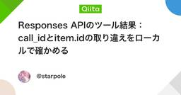
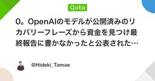
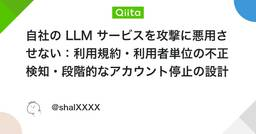
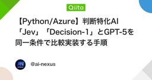
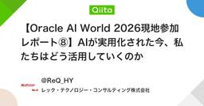


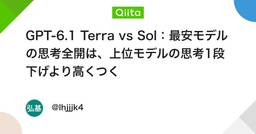
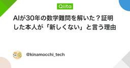


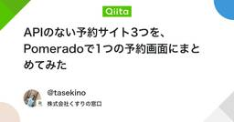
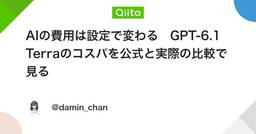


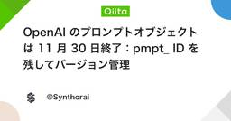


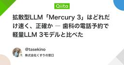
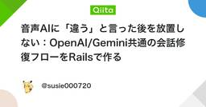
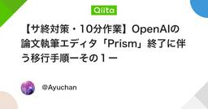